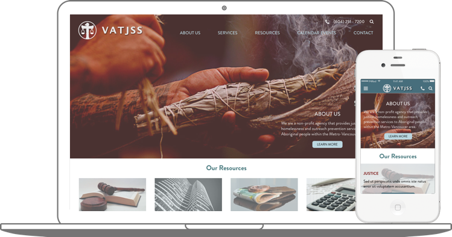

<!-- TODO: Change all href="#" links to the real ones. -->

<div id="project">
    <nav aria-label="breadcrumb" role="navigation" class="project-breadcrumbs">
        <ol class="breadcrumb">
            <li class="breadcrumb-item">Projects</li>
            <li class="breadcrumb-item active" aria-current="page" data-bind="text: currentProjectName"></li>
        </ol>
    </nav>
    <div id="projectSelectionCarousel" class="carousel slide" data-interval="false">
        <div class="carousel-inner" role="listbox">
            <div class="carousel-item project-overview active" data-project-name="VenturX" data-project-details-page="project.venturx.html">
                
                <a href="https://invis.io/3SDL7YUBF" target="_blank"></a>
            </div>
            <div class="carousel-item project-overview" data-project-name="VATJSS" data-project-details-page="project.vatjss.html">
                
                <a href="https://invis.io/8VDBC0PCZ" target="_blank"></a>
            </div>
            <div class="carousel-item project-overview" data-project-name="Big Fit Girl" data-project-details-page="project.bfg.html">
                
                
            </div>
        </div>
        <a class="carousel-control-prev" href="#projectSelectionCarousel" role="button" data-slide="prev">
            <span class="carousel-control-prev-icon" aria-hidden="true"></span>
            <span class="sr-only">Previous</span>
        </a>
        <a class="carousel-control-next" href="#projectSelectionCarousel" role="button" data-slide="next">
            <span class="carousel-control-next-icon" aria-hidden="true"></span>
            <span class="sr-only">Next</span>
        </a>
    </div>
    <div id="project-body"></div>
</div>
<script type="text/javascript">
    $(function() {
        // Knockout bindings for the current project.
        function ProjectViewModel() {
            this.currentProjectName = ko.observable();
            this.updateProject = function (projectDomElement) {
                projectDomElement = $(projectDomElement);
                this.currentProjectName(projectDomElement.data("project-name"));
                $("#project-body").load(projectDomElement.data("project-details-page"));
            }.bind(this);
        }

        var projectVM = new ProjectViewModel();
        ko.cleanNode(document.getElementById("project"));
        ko.applyBindings(projectVM, document.getElementById("project"));

        // Bindings on carousel sliding.
        $("#projectSelectionCarousel").on("slide.bs.carousel", function(e) {
            projectVM.updateProject(e.relatedTarget);
        });

        projectVM.updateProject($("#projectSelectionCarousel .carousel-item.active"));
    });
</script>